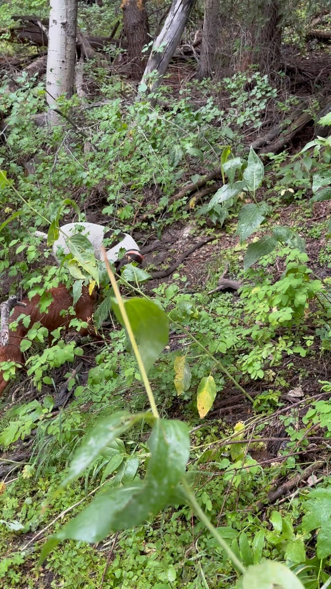

Episode 14 · September 07, 2023 · 2409
Opening Day Grouse Hunt 2023 Part 1

About This Episode
In this episode we talk about training, dogs and our excitement for opening day of the grouse hunt and the bird hunts starting up in Utah. Part one is pre-hunt recording before we get out and get hunting! Part two is after the hunt and how everything went down. Hope you all enjoy!
Questions about the training topics in this episode? Tyce works with bird dog owners and hunters through Utah Bird Dog Training. Reach out to work with him directly.
Resources & Links
- Utah Bird Dog Training — Work directly with Tyce — professional bird dog training services in Utah.
Transcript
Full transcript for Episode 14: Opening Day Grouse Hunt 2023 Part 1.
Tyce
Hey everyone, welcome to the Bird Dog Podcast. My name is Tyce. Today we're kicking off opening day of grouse season with part one — a team hunt with employees and their dogs. I want to introduce one of the newer members of our team, Orlin, talk a little about the French Brittany breed his family runs, and get into the day.
Orlin has been with us for about two months. He grew up around dogs and hunting — his family breeds and hunts French Brittanys — and he came to us wanting to learn the professional side of gun dog training. One thing I've heard a lot of young trainers say when they start is: "I thought anyone could train a dog." And that's true to a point — the basics are accessible. But there's a real difference between teaching a dog to sit and building a finished gun dog that marks, handles, retrieves cleanly, and holds its composure through pressure and chaos. The process and the methods matter. Orlin is learning that now, and he's got good instincts.
Orlin
We've been running French Brittanys in our family for a few years. It started when my brother found a female online from a breeder in Ohio — orange and white, named Penny — and she just became an incredible hunter. After Penny, we've been hooked. We've since gotten females from South Dakota, kept pups out of litters, and added Copper, a tri-color male out of Arizona who has black, tan, and white in his coat. French Brittanys have the black color gene that American Brittanys typically don't — so they come in orange and white, liver and white, and the tri-colors. They're small dogs, around 30–35 pounds, which means they're manageable as house dogs and can hunt thick cover without the physical wear you'd put on a bigger dog. The thing I've noticed training them alongside labs and shorthairs is that they tend to naturally retrieve better than American Brittanys — some individual variation but generally a cleaner retrieve. For someone wanting a versatile hunting dog that's also a family dog, it's a hard combination to beat.
Tyce
We see a lot of shorthairs at the kennel and they're extremely consistent pointers — the pointing genetics have been refined for so long that nearly every shorthair we've trained has had bird drive. The biggest variable with shorthairs isn't the pointing, it's the retrieve. Some have great natural retrieve desire, some need more work to develop it. If you're picking out a shorthair puppy, watch for retrieve interest early — a pup that naturally picks things up and carries them is going to be easier to build on down the road. Same principle applies to French Brittanys and any other pointing breed.
Today's hunt has a good group out: several dogs, mostly shorthairs plus Copper the French Brittany, first day of grouse season in the mountains. We'll have a full field recap in part two — stay tuned for that. Thanks for listening.
About the Host
Tyce Erickson
Tyce Erickson is a professional bird dog trainer and the owner of Utah Bird Dog Training in Utah. For nearly two decades he has worked with pointing dogs, retrievers, and family hunting dogs — helping owners build dogs that are capable and enjoyable in the field. The Bird Dog Podcast is an extension of that work: honest conversations on training, hunting, breeding, and everything that goes into a life spent working dogs.
More About Tyce